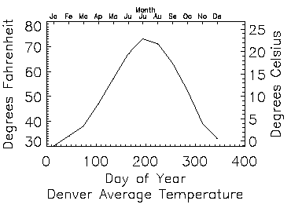
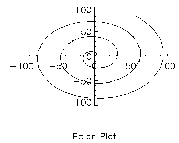

The AXIS procedure draws an axis of the specified type and scale at a given position. It can be used to add additional axes to plots or to draw axes at a specified position. The new scale is saved for use by subsequent overplots if the SAVE keyword parameter is set. By default, AXIS draws an X axis. The XAXIS, YAXIS, and ZAXIS keywords can be used to select a specific axis type and position.
AXIS [, X [, Y [, Z ]]] [, / SAVE ] [, XAXIS ={0 | 1} | YAXIS ={0 | 1} | ZAXIS ={0 | 1 | 2 | 3}] [, / XLOG ] [, / YNOZERO ] [, / YLOG ]
Graphics Keywords:
[, {X | Y | Z}CHARSIZE=
value
]
[, {X | Y | Z}GRIDSTYLE=
integer
{0 to 5}]
[, {X | Y | Z}MARGIN=
[left
,
right]
]
[, {X | Y | Z}MINOR=
integer
]
[, {X | Y | Z}RANGE=
[min
,
max]
]
[, {X | Y | Z}STYLE=
value
]
[, {X | Y | Z}THICK=
value
]
[, {X | Y | Z}TICKFORMAT=
string
]
[, {X | Y | Z}TICKINTERVAL=
value
]
[, {X | Y | Z}TICKLAYOUT=
scalar
]
[, {X | Y | Z}TICKLEN=
value
]
[, {X | Y | Z}TICKNAME=
string_array
]
[, {X | Y | Z}TICKS=
integer
]
[, {X | Y | Z}TICKUNITS=
string
]
[, {X | Y | Z}TICKV=
array
]
[, {X | Y | Z}TICK_GET=
variable
]
[, {X | Y | Z}TITLE=
string
]
[, ZVALUE=
value
{0 to 1}]
Scalars giving the starting coordinates of the new axis. If no coordinates are specified, the axis is drawn in its default position as given by the [XYZ]AXIS keyword. When drawing an X axis, the X coordinate is ignored, similarly the Y and Z arguments are ignored when drawing their respective axes (i.e., new axes will always point in the correct direction).
Set this keyword to indicate that the scaling to and from data coordinates established by the call to AXIS is to be saved in the appropriate axis system variable, !X, !Y, or !Z. If this keyword is not present, the scaling is not changed.
Set this keyword to draw an X axis. If the X argument is not present, setting XAXIS equal to 0 draws an axis under the plot window with the tick marks pointing up, and setting XAXIS equal to one draws an axis above the plot window with the tick marks pointing down. If the X argument is present, the X axis is positioned accordingly, and setting XAXIS equal to 0 or 1 causes the tick marks to point up or down, respectively.
Set this keyword to specify a logarithmic X axis
Set this keyword to draw a Y axis. If the Y argument is not present, setting YAXIS equal to 0 draws an axis on the left side of the plot window with the tick marks pointing right, and setting YAXIS equal to one draws an axis on the right side of the plot window with the tick marks pointing left. If the Y argument is present, the Y axis is positioned accordingly, and setting YAXIS equal to 0 or 1 causes the tick marks to point right or left, respectively.
Note: The YAXIS keyword must be specified in order use any Y* graphics keywords. See the note under Graphics Keywords Accepted for more information.
Set this keyword to specify a logarithmic Y axis.
Set this keyword to inhibit setting the minimum Y axis value to zero when the Y data are all positive and non-zero, and no explicit minimum Y value is specified (using YRANGE, or !Y.RANGE). By default, the Y axis spans the range of 0 to the maximum value of Y, in the case of positive Y data. Set bit 4 in !Y.STYLE to make this option the default.
Set this keyword to draw a Z axis. If the Z argument is not present, setting ZAXIS has the following meanings:
0 = lower (front) right, with tickmarks pointing left
1 = lower (front) left, with tickmarks pointing right
2 = upper (back) left, with tickmarks pointing right
3 = upper (back) right, with tickmarks pointing left
If the Z argument is present, the Z axis is positioned accordingly, and setting ZAXIS equal to 0 or 1 causes the tick marks to point left or right, respectively.
Note that AXIS uses the 3D plotting transformation stored in the system variable field !P.T.
Note: The ZAXIS keyword must be specified in order use any Z* graphics keywords. See the note under Graphics Keywords Accepted for more information.
See Direct Graphics Keywords for the description of the following graphics and plotting keywords:
Note:
In order for the Y* or Z* graphics keywords to work with the AXIS procedure, the corresponding YAXIS or ZAXIS keyword must be specified. For example, the following code will
not
draw a title for the Y axis:
AXIS, YTITLE ='Y-axis Title'
To use the YTITLE graphics keyword, you must specify the YAXIS keyword to AXIS:
AXIS, YAXIS = 0, YTITLE ='Y-axis Title'
Because the AXIS procedure draws an X axis by default, it is not necessary to specify the XAXIS keyword in order to use the X* graphics keywords.
The AXIS procedure accepts the set of plotting keyword parameters that govern the scaling and appearance of the axes. Additionally, the keyword parameters XAXIS, YAXIS, and ZAXIS specify the orientation and position (if no position coordinates are present) of the axis. The value of these parameters are 0 for the bottom or left axis and 1 for the top or right. The tick marks and their annotation extend away from the plot window. For example, specify YAXIS = 1 to draw a y-axis on the right of the window.
The optional keyword parameter SAVE saves the data-scaling parameters established for the axis in the appropriate axis system variable, !X, !Y, or !Z. Any of the coordinate systems can be used by including the appropriate coordinate keyword in the call. The coordinate corresponding to the axis direction is ignored. When specifying an x-axis, the x-coordinate parameter is ignored, but must be present if there is a y coordinate.
The figure shown below illustrates using AXIS to draw axes with a different scale, opposite the main x- and y -axes. The plot is produced using PLOT with the bottom and left axes annotated and scaled in units of days and degrees Fahrenheit. The XMARGIN and YMARGIN keyword parameters are specified to allow additional room around the plot window for the new axes. The keyword parameters XSTYLE = 8 and YSTYLE = 8 inhibit drawing the top and right axes.
|
 |
Next, the AXIS procedure is called to draw the top, XAXIS = 1, axis, labeled in months. Eleven tick intervals with 12 tick marks are drawn. The x value of each monthly tick mark is the day of the year that is approximately the middle of the month. Tick-mark names come from the MONTH string array.
The right y -axis, YAXIS = 1, is drawn in the same manner. The new y -axis range is set by converting the original y -axis minimum and maximum values, saved by PLOT in !Y.CRANGE, from Fahrenheit to Celsius, using the formula C = 5(F-32)/9. The keyword parameter YSTYLE = 1 forces the y -axis range to match the given range exactly. The program is as follows:
; Create some temperature data
TEMP=[30, 34, 38, 47, 57, 67, 73, 71, 63, 52, 39, 33]
MONTH=['Ja', 'Fe', 'Ma', 'Ap', 'Ma', 'Ju', 'Ju', $
'Au', 'Se', 'Oc', 'No', 'De']
DAY=FINDGEN(12) * 30 + 15
; Plot the data, omit right and top axes:
PLOT, DAY, TEMP, /YNOZERO, $
SUBTITLE = 'Denver Average Temperature', $
XTITLE = 'Day of Year', $
YTITLE = 'Degrees Fahrenheit', $
XSTYLE=8, YSTYLE=8, XMARGIN=[8, 8], YMARGIN=[4, 4]
; Draw the top x-axis, supplying labels, etc.
; Make the characters smaller so they will fit:
AXIS, XAXIS=1, XTICKS=11, XTICKV=DAY, XTICKN=MONTH, $
XTITLE='Month', XCHARSIZE = 0.7
; Draw the right y-axis. Scale the current y-axis minimum
; values from Fahrenheit to Celsius and make them
; the new min and max values. Set YSTYLE=1 to make axis exact.
AXIS, YAXIS=1, YRANGE = (!Y.CRANGE-32)*5./9., YSTYLE = 1, $
YTITLE = 'Degrees Celsius'
Example Code: The code above is included in the batch file plot09 in the examples/doc/plot subdirectory of the IDL distribution .
If the POLAR keyword parameter is set, the IDL PLOT procedure converts its coordinates from polar to Cartesian coordinates when plotting. The first parameter to plot is the radius, R , and the second is the angle θ (expressed in radians). Polar plots are produced using the standard axis and label styles, with box axes enclosing the plot area.
The following figure illustrates using AXIS to draw centered axes, dividing the plot window into the four quadrants centered about the origin. This method uses PLOT to plot the polar data and to establish the coordinate scaling, but suppresses the axes. Next, two calls to AXIS add the x - and y -axes, drawn through data coordinate (0, 0).
|
 |
; Make a radius vector:
R = FINDGEN(100)
; Make a vector:
THETA = R/5
; Plot the data, suppressing the axes by setting their styles to 4:
PLOT, R, THETA, SUBTITLE='Polar Plot', XSTY=4, YSTY=4, /POLAR
AXIS, 0, 0, XAX=0
; Draw the x and y axes through (0, 0):
AXIS, 0, 0, YAX=0
Example Code: The code above is included in the batch file plot09 in the examples/doc/plot subdirectory of the IDL distribution .
|
Original |
Introduced |